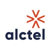
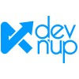
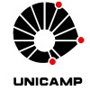

Samuel Toyoshi Ishida
Personal Projects
Yvy
Jul 2025 – PresentEnvironmental observability platform that tracks and overlays deforestation and wildfire data with firms, conservation units (UCs), and indigenous territories. Integrates official data from ICMBio and FUNAI to provide actionable insights for environmental monitoring and compliance in Brazil.
JS Agent
Mar 2026 – PresentBrowser-first multi-step agent with hosted/local LLM routing, modular skill runtime, modular prompt composition, context-aware orchestration, and durable memory/cache layers in local storage.
Professional Summary
Driven by an early passion for technology, with early exposure to C and Linux before college through the Brazilian Informatics Olympiad and personal projects, Senior Software Engineer with 10+ years of experience building resilient infrastructure and scalable backend systems in collaborative, agile environments. Experience spans the full software lifecycle — from system design and high-performance APIs in Python, TypeScript, and Java to cloud modernization across AWS and Azure using Terraform, Docker, and Kubernetes. At Goldman Sachs, supports critical global trading platforms and leads internal AI initiatives with RAG and LLM orchestration that improve reliability and developer productivity.
Technical Skills
Professional Experience
Site Reliability Engineer

DevOps
DevOps
Software Engineer
Backend Developer
Backend Developer
Web Development Intern

Web Development Intern
Member
